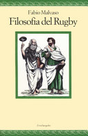
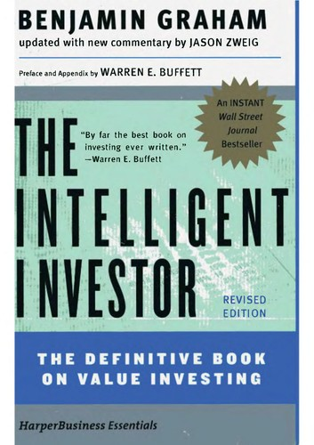
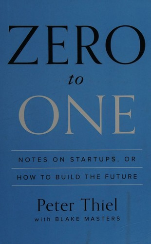
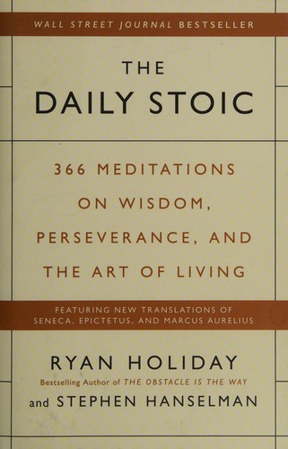
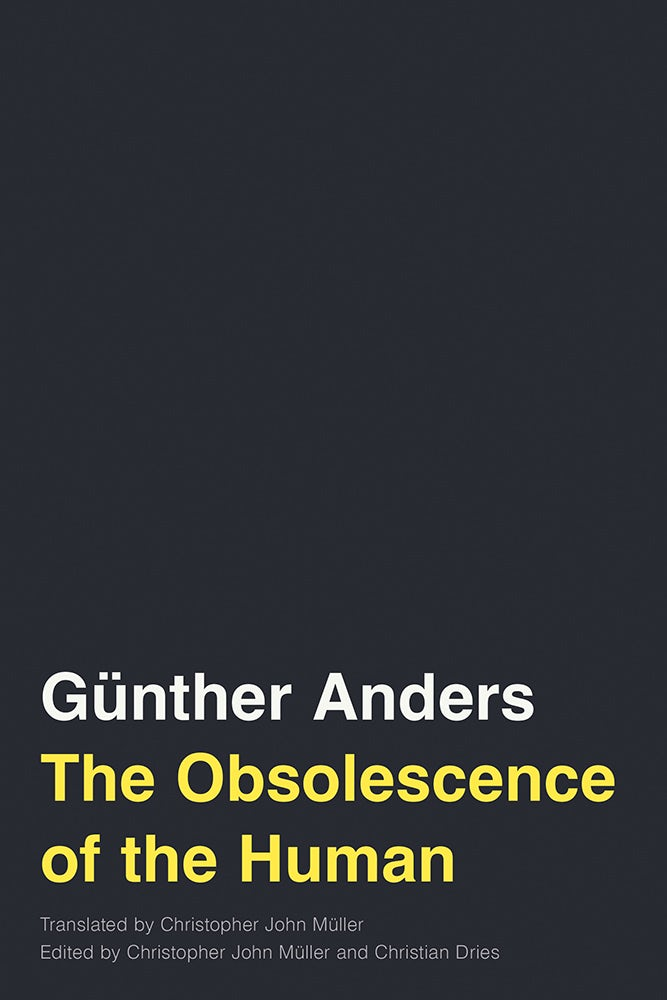

Rugby


Playing competitive rugby for over a decade with Rugby Gubbio 1984, including an early promotion to the Senior First Team (Serie B) as an Under-18 player, served as my primary school of character. Dedicating myself to an intensive schedule of five weekly training sessions and Sunday matches cultivated elite levels of discipline, accountability, and mental resilience. The sport instilled a profound "team-first" mentality, teaching me to absorb setbacks, correct errors immediately, and actively cover for teammates under pressure. Ultimately, though I made the difficult choice to pivot my focus toward academic pursuits during university, I carry these core values forward, being always ready to "keep carrying the ball".

Finance
Since 2021, I have cultivated my interests in personal finance, transitioning from empirical learning via virtual brokers to managing real capital. Moving away from speculative trading, I anchored my growth in classical investment literature and macroeconomic study. Today, I focus on a long-term, highly diversified, and conservative investment strategy focused on wealth preservation and risk mitigation. In this last years I grew my financial literacy and developed strategic patience, emotional resilience against market volatility, and an analytical, self-driven approach to data-backed decision-making.

Entrepreneurship
At 18, I launched a dropshipping e-commerce platform, that rapidly thought me what failing feels like. This initial venture sparked a continuous focus on the startup ecosystem, specifically in identifying unaddressed problems and developing scalable solutions, but that's not it. I like people, and proprably what I prefer most about entrepeneruship is that it gives you the chance to realize meaningful and impactful team-realized projects for all the world to enjoy. In this optic I guess the aerospace sector and my degree will mostly act as the main springboard for future ventures.

Music
Pursued as a personal passion, my journey with the electric guitar has been a vital catalyst for my creativity and imagination. This artistic outlet uniquely intersected with my engineering studies, particularly within signal analysis, giving me the fascinating perspective of scientifically breaking down the acoustic and wave principles I had previously experienced intuitively as a musician. To this day, playing the guitar is more a hobby than anything else, but it's still a hell of a way to spend my time and I definitely see myself playing once in a while in my future.
Philosophy
During my final year of scientific high school, studying Latin literature, I got close to the writings of Seneca and a few Epicurean texts. Those introduced me to the foundational principles of Stoic philosophy. Aligning with their ethical and moral values, I integrated these concepts into my academic pursuits and athletic discipline. Following graduation, I deepened this knowledge through the independent study of classical texts and I still let them guide me through every single day.
A few wise words about life: Epistulae ad Lucilium n.32 - n.37 - n.39 - n.64 - n.65 .


Failures
Be aware, the following are just the main ones. Life is full of failures, and in my understanding, growing up also means being ready when they come, so that you can stand up and keep pushing towards your goals.
As a rugby player, I suffered several injuries, and every one of them was due to a lack of attention or technique. So every big stop in my sporting career reminded me of what I should have improved before getting on the field, whether it was stamina, diet or technique.
Then, of course, there was the failed attempt at launching a dropshipping e-commerce platform without the required resources, that was a big one.
But my biggest failure was probably trying to get into the Italian Air Force Academy and being sent home after just a few days in Pozzuoli. That profoundly changed my perspective and led me to where I am today. I remember arriving at the train station to head back home while filling out the application form for the BSc in Aerospace Engineering at the University of Pisa. Without that day, this website probably wouldn't exist.
And don't even get me started on the several bad grades I got during my years at university, and I'm still counting!
So, long story short, if I learned something is that failing is a great way to understand where to steer your focus and your energy, whether in sports, studies, or life in general. The really hard part isn't failing itself, but accepting that it happened and understanding how to keep it from happening again.